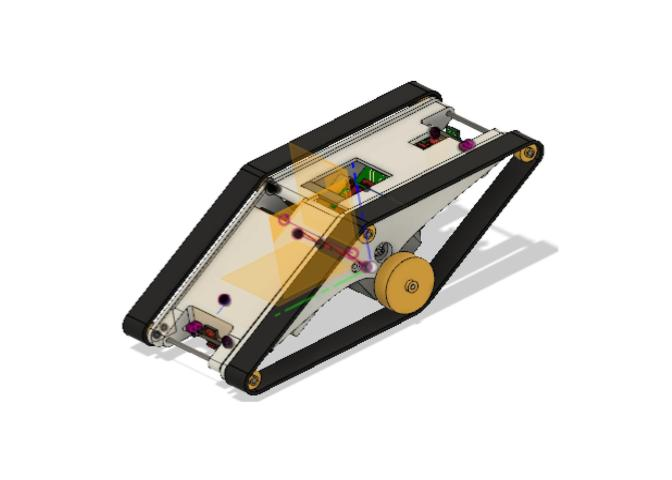

 Caterpillars travel in swarms, or groups, rolling over one another. This allows them to travel faster and more safely. I worked on computer science and engeering research for publication with Professor Mircea Teodorescu and his 2018 Ph.D. students at UCSC. We created caterpillar robots to mimic the aforementioned caterpillar swarm behavior and to test its qualities. My team and I used Arduino to run motors and Autodesk Fusion 360 for CAD (3D modeling) to create these robots.